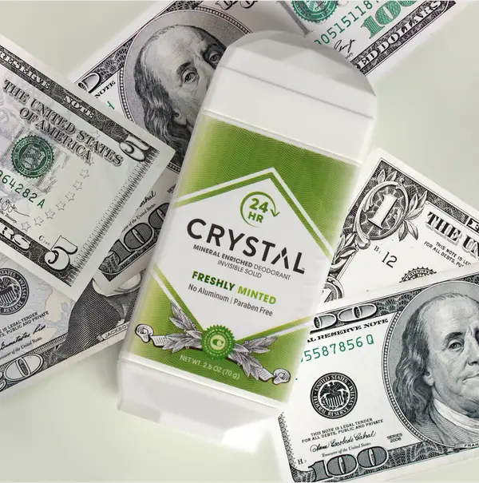
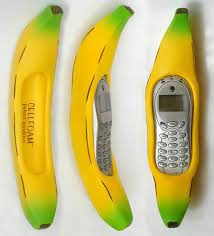
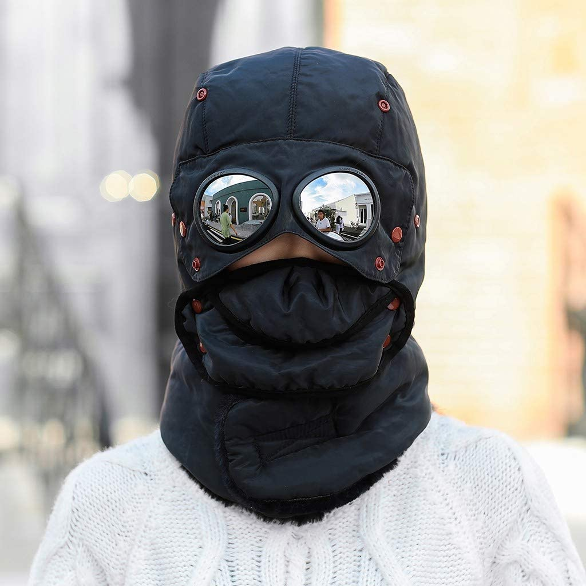
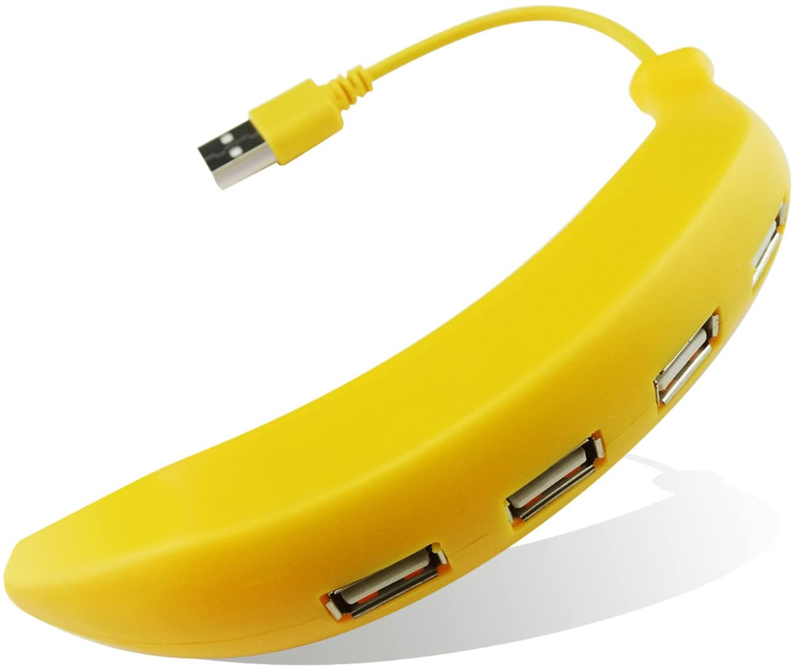

Some of these products will blow your mind, but others will make you question “Why does this even exist?”. People have even bought these products just because they look fun, but is it really that great?
Have you ever wondered what your favorite pumpkin pie, or maybe what corn would taste like soda. Well if you do then the company Lester's Fixins would be the perfect provider for you. Yes, this isn't a joke, and the variety of drinks from bacon soda, ranch soda, and even buffalo wings soda exist. The drinks are entirely made from buffalo wings or sweet corn, but have the same essans and taste as the foods. You can buy this drink from Amazon, but it would cost you a little from around $30 dollars per drink.
This odd product is actually real, and is sold on amazon. This product is just consumer branding to let you think you're rubbing real money on you. The marketing to sell this product is to feel as fresh as a million dollars every day. The outer look of the deodorant has actually the same colors of U.S dollars.
Photo Credits: Buzzfeed
So you're out on a walk with your dog, but unfortunately it starts raining. You forgot to take your umbrella with you, but for some reason your dog has taken your umbrella and made it suitable for itself. Of course the example was just a joke, but this product of an umbrella over your dog actually exists. For some reason some people want to have a giant umbrella over their dog, so they don't get wet. Maybe their dogs need some small rain boots as well. But the jokes aside, the dog umbrella comes in at a price of around $15 - $30 dollars on amazon, and I wish.
The company “Cellfoam" is a cell phone case manufacturer. One of their many weird cellphone cases is a banana shaped cell phone case made of foam. It is extremely hard to put it in a small pocket, and the banana case only looked weird. It didn't even protect the phone properly, because the cellphone could just slide off the case and land on the ground.
Photo Credits: http://www.cellfoam.com
The winter trapper hat is basically a normal hat you use in winter, but it is covered around your whole face. It is actually dont a really bad idea, because it can help polar explorers to keep their heads, and face warm while they are walking through the long, and icy glaciers. But it also looks weird, and funny too. It is also not as normal to see a person wearing a winter trapper normally on an ordinary day in the winter season (If you don't live further north). The winter trapper comes with glasses which can protect your eyes, and thick wool to keep you warm. It also just cost around $15 - $20.
Photo Credits: https://odditymall.com
So you have your banana phone case, but need to charge your phone. Luckily you have the banana USB hub, shaped like a real banana! It functions like a normal USB hub, but the USb ports are bent alongside the shape of the banana. The charging quality is low, and costs $10 just for a plastic banana charger.
Photo Credits: https://us.amazon.com
This isn't your ordinary clean, fresh, and nice smelling soap. As you probably see on the subtitle, it is actually a normal soap, but shaped like your daily poop. So you might not use it as your normal hand soap, but you could use it to prank some of your friends. For example, put the poop soap in someone's bed, and wait for the person to come. When he comes he would be horrified and disgusted by actually believing it is a real soap. But if you are a true money saver, then just use your own poop. You can buy the poop soap on amazon, ebay and wish.
When you're drying your wet dog with a normal hairdryer, then it'll probably take a lot of time. But you don't need to waste that time with this weird and dum product. It is called a Puff-N-Fluff Dog Dryer, and is basically just a big fluffy “pillow” around your dog, but it got a hole in one of the ends in the fluffy “pillow”. The Puff-N-Fluff Dog Dryer comes in at a price of $45! This is definitely not a product people recommend, because it's overpriced, and is really oddly looking.
You don't need a grill or a toaster, all you need is a hotdog toaster. It has an inside warming system for your buns and hotdogs, but it doesn't warm as well as an electric stove, and it takes more time to cook the hotdog through. It also takes up more energy, and can only handle 2 - 4 hotdogs at a time. This product is definitely not for people who just want to make their hotdog quik, but maybe for extreme hotdog fans. You can buy it for $25 dollars on amazon.
The ostrich pillow is just a gigantic pillow, right? Well it would have made a lot more meaning the pillow was just bigger and better comfort, but who needs that right. Introducing the ostrich pillow, a full pillow for your head. It is used for traveling on for example a train, and you feel a little tired, then just unpack the giant ostrich pillow from your bag and rest. It isn't cheap either because it can cost up to $100 on Amazon.